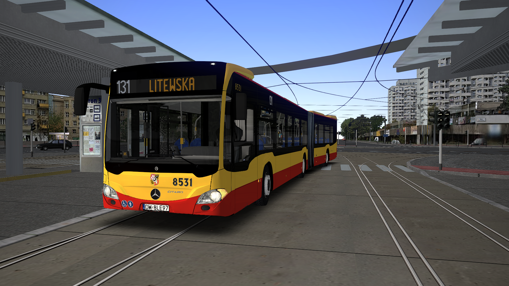

ReadMe
Projekt Wrocław –
– Pojazdy dedykowane
v1.1

1. Wstęp
Do poprawnego działania dedykowanych pojazdów wymagana jest modyfikacja, na bazie której zostały one stworzone.
Można ją pobrać tutaj. (https://reboot.omsi-webdisk.de/file/9526-mercedes-benz-c2-2011-2022-berlin-neutral/)
2. Instalacja
Zawartość folderu Dedykowane pojazdy należy umieścić w folderze gry OMSI 2.
W przypadku zapytania przez system należy zastąpić pliki.
3. Zawartość
- 5 dedykowanych konfiguracji pojazdów
- Realny sterownik SiMS SIL2
- Półrealne systemy informacji pasażerskiej
- Realne brygadówki
- Realny skrypt działania drzwi, w tym ostrzeżenie przed zamknięciem drzwi, przycisk otwierania/zamykania wszystkich drzwi, mruganie przycisków drzwi przy żądaniu otwarcia
- Półrealne wyświetlacze (układ, kolor oraz czcionka)
- Półrealny układ przycisków deski rozdzielczej, w tym nowe przyciski drzwi oraz poprawione "wysepki" od przycisków drzwi na pulpicie
- Półrealny układ siedzień oraz poręczy
- Realne kasowniki ze skryptem
- Realne przyciski CG ze skryptem
- Podział malowań na osobne dedykowane foldery w zależności od numeru taborowego
(Texture\Repaints\_MPK_Wroclaw_Dedyki) - Poprawione kamery
- Zabudowa kabiny, półrealny układ pulpitu oraz inne poprawki kabiny
- Polskie tablice rejestracyjne
- Spolszczenie komputera pokładowego
4. Autorzy
- Zielu – malowania
- MkPlay – konfiguracje modeli, wyświetlacze oraz ich czcionki, układ i poprawki pulpitu, dodatki do kabiny, oświetlenie wewnętrzne, przyciski CG, umieszczenie sterownika SiMS SIL2 oraz jego poprawki, umieszczenie SIPów oraz ich poprawki, brygadówki, inne drobne poprawki modelu
- TomcatPL – kasowniki EM316FO ze skryptem, ładowarki USB, urealnienie skryptu drzwi, zabudowa kabiny kierowcy, odpowiedni układ poręczy, drobne poprawki nadwozia
- Mieszko Kędzierski – odpowiedni układ siedzeń, przyciski stop
- TheNixen – umieszczenie sterownika SiMS SIL2
- Thunder 2-1 – doormod z systemem CG, ostrzeżenie przed zamknięciem drzwi, otwieranie/zamykanie wszystkich drzwi, mruganie przycisków drzwi przy żądaniu otwarcia, skrypt oświetlenia wewnętrznego, skrypt przyklęków, skrypt wyłączania retardera, spolszczenie komputera pokładowego, zmiany skryptu SiMS SIL2 oraz SIPów
- Sobol, Pitoras – sterownik SiMS SIL2
- kuwwer, Janix, Sobol - systemy informacji pasażerskiej